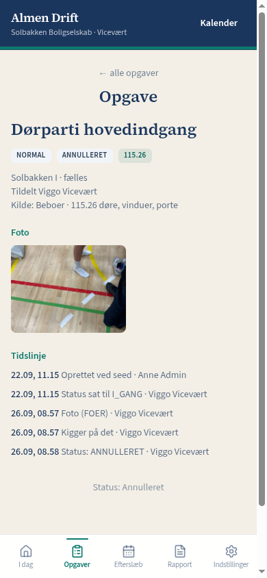
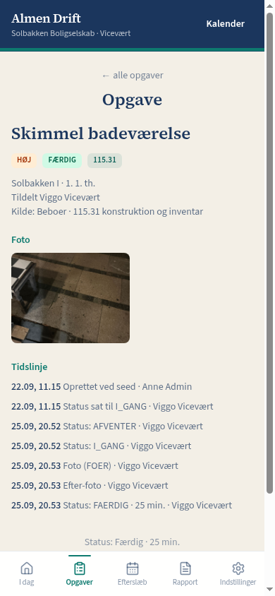
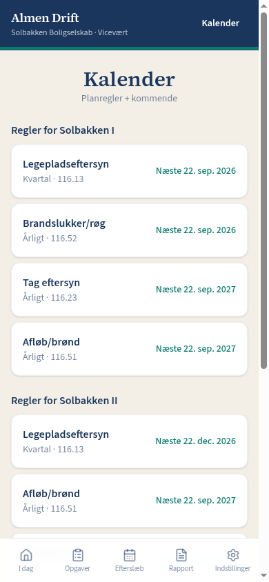
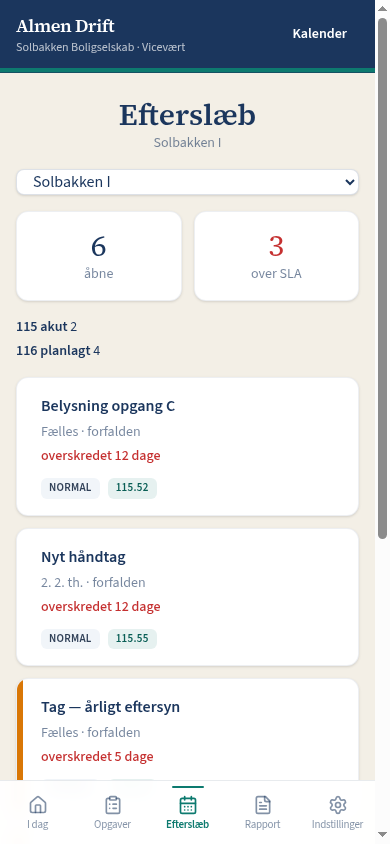

Sådan virker det
1. Opret opgaven
Når beboeren skriver, oprettes opgaven i appen i stedet for at videresende mailen.
2. Viceværten lukker med foto
Viceværten ser I dag og lukker opgaver med før- og efter-foto. Billederne viser to forskellige opgaver: én med før-foto og én lukket med efter-foto.


3. De faste ting ligger med dato
Tilbagevendende opgaver lægges ind én gang, så man kan se, om årets runde er kørt.

Driftschefen kan også se efterslæb.
